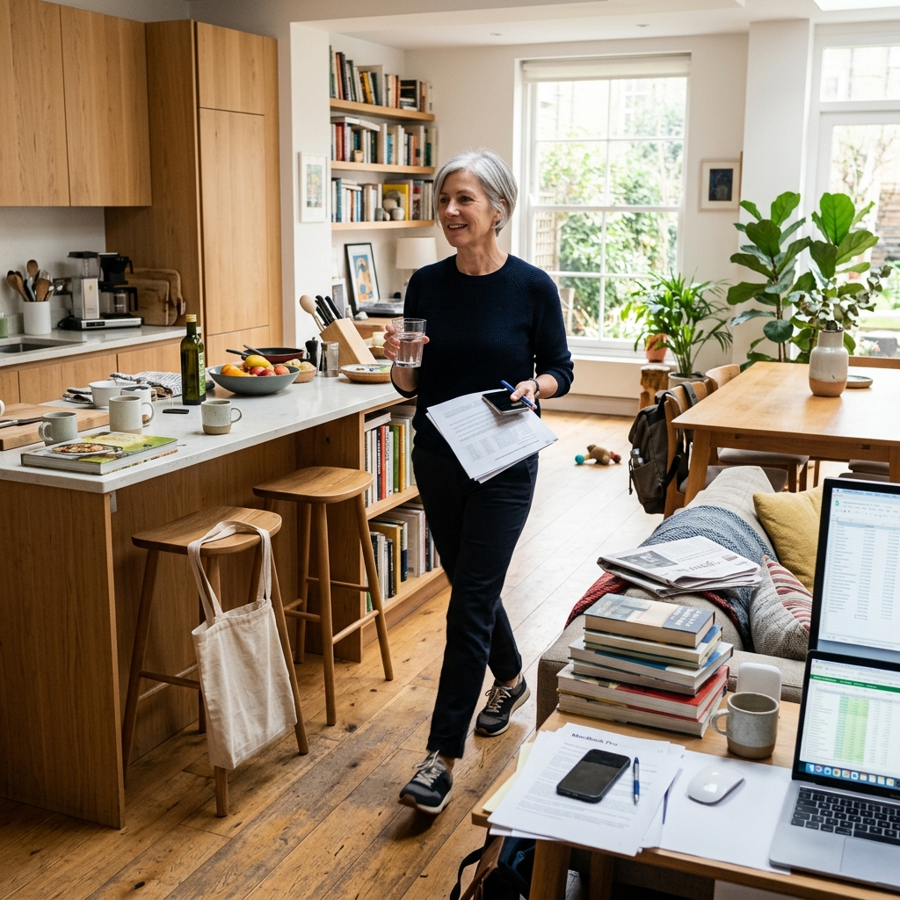
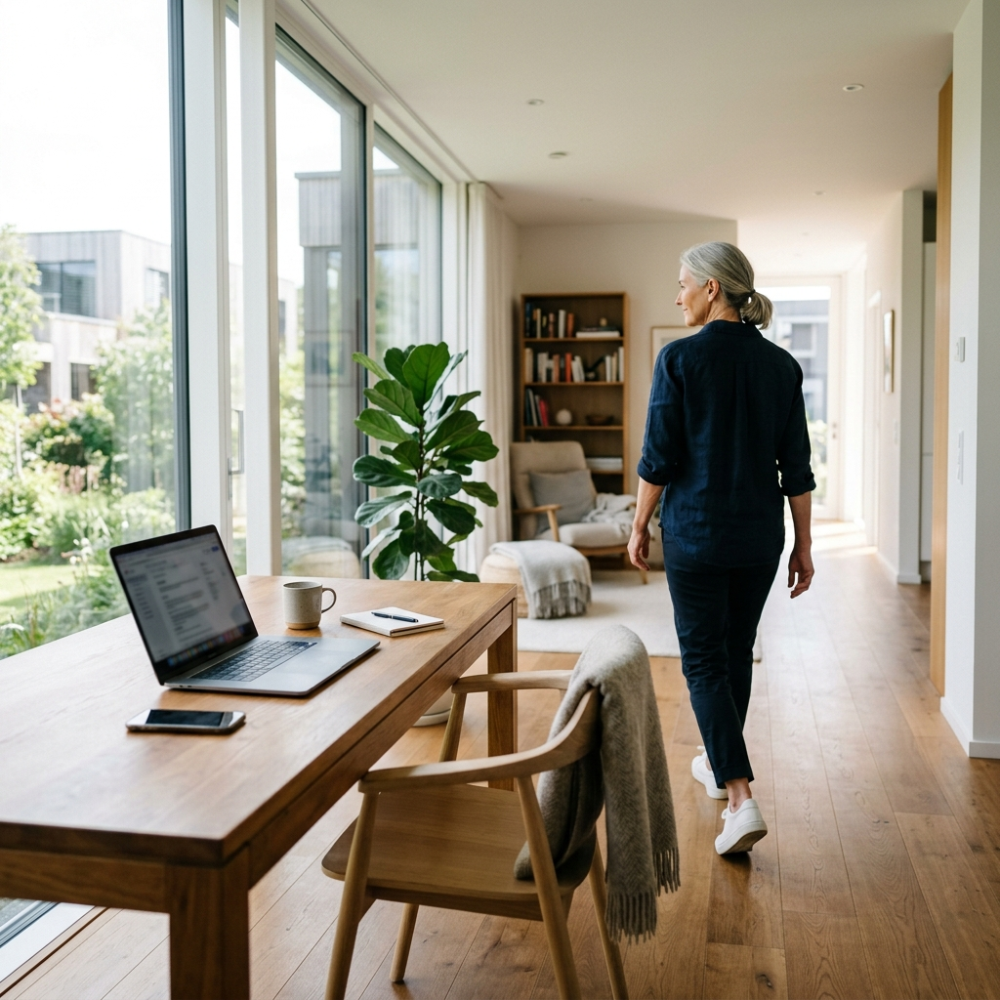

Wiem, wiem. Słyszysz: wstań od komputera, przejdź się, nie siedź tak długo — i myślisz: to chyba nie może być aż tak ważne. Masz siłownię, chodzisz na treningi, ruszasz się. Co tam 30 minut mniej siedzenia? Otóż mogą to być najważniejsze 30 minut Twojego dnia. I nie mówię tego z przekory — mówi to nauka.
Problem, którego nie ma na plakacie w gabinecie lekarskim
Jest takie zjawisko, które badacze nazywają „Active Couch Potato”. Po polsku: aktywny kanapowiec. To jest osoba, która ćwiczy regularnie — 3 razy w tygodniu, może 4 — ale poza tymi godzinami treningu siedzi praktycznie bez przerwy. I ta osoba może mieć wyższe ryzyko chorób metabolicznych niż ktoś, kto podobny czas siedzenia regularnie przerywa wstawaniem i ruchem.
Przeciętny dorosły po 50-tce siedzi około 9–11 godzin dziennie. To jest więcej niż śpi. I więcej niż jakikolwiek poprzedni wiek ludzki w historii — bo praca fizyczna zanikła. W ciągu ostatnich 50 lat liczba zawodów wymagających umiarkowanego wysiłku fizycznego spadła o 58%.
Co konkretnie robi siedzenie z ciałem po 50-tce
Nie mówię teraz o oczywistych rzeczach — że bolą Cię plecy, że masz sztywną tylną część ciała po 8 godzinach przy biurku. Mówię o rzeczach, które dzieją się w środku bez Twojej wiedzy.
Co się dzieje już po 30 minutach ciągłego siedzenia
Wyobraź sobie, że Twoje mięśnie nóg to pompa do krwi. Kiedy stoisz i chodzisz, ta pompa pracuje. Kiedy siadasz — zatrzymuje się. I krążenie w nogach dosłownie spowalnia. Enzymy odpowiedzialne za spalanie tłuszczu we krwi — przede wszystkim lipaza lipoproteinowa — niemal przestają działać. Glukoza we krwi zaczyna rosnąć szybciej niż powinna. Ciśnienie krwi się podnosi.
Zdarza się to po 30 minutach siedzenia. Nie po 8 godzinach. Po 30 minutach.
Co się dzieje przez długi czas — miesiące i lata
- Insulinooporność — komórki stają się mniej wrażliwe na insulinę, co jest pierwszym krokiem do cukrzycy typu 2.
- Wzrost obwodu talii bez zmiany wagi — tłuszcz trzewny odkłada się głęboko w brzuchu nawet bez przytycia.
- Zapalenie o niskiej intensywności — przewlekły stan zapalny, który niszczy naczynia krwionośne przez lata.
- Sarkopenia — siedzenie przyspiesza utratę masy mięśniowej, dlatego osoba, która siedzi 10 godzin dziennie, traci mięśnie szybciej niż ta, która siedzi 6 godzin — nawet przy tym samym treningu.
Pół godziny mniej — co naprawdę się zmienia po roku?
To jest kluczowe pytanie. I jest na nie bardzo konkretna odpowiedź naukowa.
A co z 30 minutami mniej siedzenia dziennie przez rok? Matematyka jest prosta i zaskakująca:
- 30 minut dziennie × 365 dni = 182 godziny mniej siedzenia rocznie.
- Każde 30 minut zamieniasz na lekki ruch — chodzenie po mieszkaniu, stanie, spacer.
- Przy 2–4% poprawy biomarkerów na każde 30 minut — przez rok masz mierzalną, skumulowaną poprawę zdrowia, którą lekarz zobaczy w badaniach.
Dodatkowe 5 minut umiarkowanej aktywności dziennie obniża liczbę zgonów o 6% w najmniej aktywnej grupie populacji. Z 100 000 osób umierających rocznie — 6000 mogłoby przeżyć. Z powodu pięciu minut dziennie.
Dlaczego chodzenie to nie „cokolwiek” — pięć zaskakujących faktów
1. Chodzenie aktywuje enzymy, które siedzenie wyłącza
Kiedy wstajesz i idziesz — nawet do drukarki, do kuchni, na balkon — aktywuje się lipaza lipoproteinowa, główny enzym rozkładający tłuszcz we krwi. Po 20-30 minutach siedzenia aktywność tego enzymu w mięśniach nóg spada o ponad 90%. Jeden krok uruchamia go z powrotem niemal natychmiast.
Naukowcy wykryli, że mięśnie nóg, kiedy pracują podczas chodzenia, produkują tzw. miokiny — hormony, które działają jak naturalne leki dla serca, wątroby i mózgu. Są wydzielane tylko w czasie skurczów mięśni. Kiedy siedzisz — nie są produkowane.
2. Chodzenie po domu reguluje glukozę lepiej niż lekarstwo
Serio. W badaniu na osobach z cukrzycą typu 2 — przerywanie siedzenia co 30 minut zaledwie 3-minutowym marszem w miejscu redukowało poziom glukozy poposiłkowej istotnie bardziej niż kontynuowanie siedzenia z dodatkowym lekiem.

3. Ile kroków naprawdę potrzebujesz — tabela, która zaskakuje
| Kto to badał | Optymalna liczba kroków | Co to oznacza |
|---|---|---|
| JAMA Internal Medicine (2019) | ~7 500 kroków / dzień | Wystarczy do istotnego zmniejszenia ryzyka u kobiet po 70-tce. |
| Lancet Public Health (2022) | ~6 000 kroków / dzień | Optimum dla osób po 60-tce. Dalsze kroki dają mniejszy przyrost korzyści. |
| Harvard Medical School | 7 000–8 000 kroków | Najlepszy zakres dla dorosłych po 50-tce. 10 000 nie jest konieczne. |
| Skąd się wzięło 10 000? | Z reklamy! | Wymyślone marketingowo w 1965 roku. Brak podstaw naukowych. |
Wniosek: 6000–8000 kroków dziennie to rozsądny cel, który u części osób da się osiągnąć bez wielkiej rewolucji — na przykład przez regularne wstawanie co 30–40 minut.
Nazwa Manpo-kei dosłownie znaczy „10 000 kroków miernik”. To była strategia marketingowa firmy Yamasa Tokei. Przez 60 lat żyje w zbiorowej świadomości jako „medyczna norma”.
4. Chodzenie i mózg — związek, który robi wrażenie
Kiedy chodzisz — nawet powoli — mózg dostaje więcej krwi. Jednocześnie rośnie produkcja BDNF — białka, które badacze nazywają „nawozem dla neuronów”. Stymuluje wzrost nowych połączeń, poprawia pamięć, koncentrację i nastrój.
Badanie Stanforda pokazało, że spacer zwiększa kreatywne myślenie o średnio 81%. Chodzenie samo w sobie, niezależnie od otoczenia, wyzwala inny tryb myślenia.
5. Chodzenie i długowieczność — liczba, która musi zrobić wrażenie
Jak to zrobić — bez żadnego wysiłku
Nie musisz nic specjalnego planować. Potrzebujesz tylko jednej zmiany w myśleniu: każde 30–40 minut siedzenia = automatyczny sygnał do wstania na 2–5 minut.
- Budzik lub alarm w telefonie co 35 minut — kiedy dzwoni, wstajesz. Tylko tyle.
- Szklanka wody na biurku — musi się skończyć przed następną szklanką (po którą idziesz do kuchni).
- Drukarka w innym pokoju — klasyczna metoda, która działa i była testowana przez naukowców.
- Telefon w innym kącie mieszkania — za każdym razem, gdy dzwoni — wstajesz.
- Wieczór: zamiast 3 odcinków serialu siedząc — jeden odcinek na rowerze stacjonarnym lub orbitreku. Resztę normalnie.
Nie musisz chodzić. Wystarczy wstać i stać przez 2 minuty. Badania pokazują, że nawet samo stanie — bez chodzenia — aktywuje mięśnie nóg i poprawia przepływ krwi. Wstanie to już jest ruch.
Obalamy mity — bo jest ich sporo w tej tematyce
| MIT | FAKT |
|---|---|
| Jeśli chodzisz na siłownię — siedzenie nie ma znaczenia. | Błąd. Siedzenie jest niezależnym czynnikiem ryzyka. Możesz mieć metaboliczne skutki siedzenia mimo ćwiczeń. |
| 10 000 kroków to naukowa norma. | To reklama z 1965 roku. Nauka mówi: 6000–8000 kroków to optimum dla osób po 50-tce. |
| Godzina treningu nadrabia cały dzień siedzenia. | Niestety nie. Jedna godzina siłowni nie „zeruje” 10 godzin siedzenia. |
| Stanie przy biurku rozwiązuje problem. | Stanie przez 8 godzin też nie jest idealne. Chodzi o przemienność: siądź, wstań, chodź. |
Na koniec — jedna liczba do zapamiętania
Nie 10 000 kroków. Nie godzina ćwiczeń. Nie 30 minut cardio.
30 minut mniej siedzenia dziennie.
To jest liczba, którą każdy może osiągnąć bez żadnej dodatkowej infrastruktury. Przez rok: 182 godziny ruchu zamiast siedzenia. Tyle samo co kilkadziesiąt sesji siłowni.

Źródła i linki
- [1] Dunstan DW et al. (2021). Sit less and move more for cardiovascular health. Nature Reviews Cardiology.
- [2] Keadle SK et al. (2017). Targeted Reductions in Sitting Time to Increase Physical Activity and Improve Health. PMC5511092.
- [3] Diaz KM et al. (2025). Breaking up prolonged sedentary behavior to improve blood glucose and blood pressure. BMC Public Health.
- [4] Carter SE et al. (2022). Acute effects of interrupting prolonged sitting with standing and light-intensity walking. PMC9325803.
- [5] Buman MP et al. (2015). For every 30 minutes reallocated from sedentary time to light-physical activity: 2-4% improvement in CVD risk biomarkers. PMC8059591.
- [6] Edouard U. et al. (2026). Five extra minutes of moderate activity per day reduces deaths by 6%. The Lancet / Medical News Today.
- [7] Lee IM et al. (2019). Association of step volume and intensity with all-cause mortality in older women. JAMA Internal Medicine.
- [8] Paluch AE et al. (2022). Daily steps and all-cause mortality. Lancet Public Health.
- [9] Stanford University (2014). Walking boosts creative thinking by 81%. Oppezzo M, Schwartz DL.